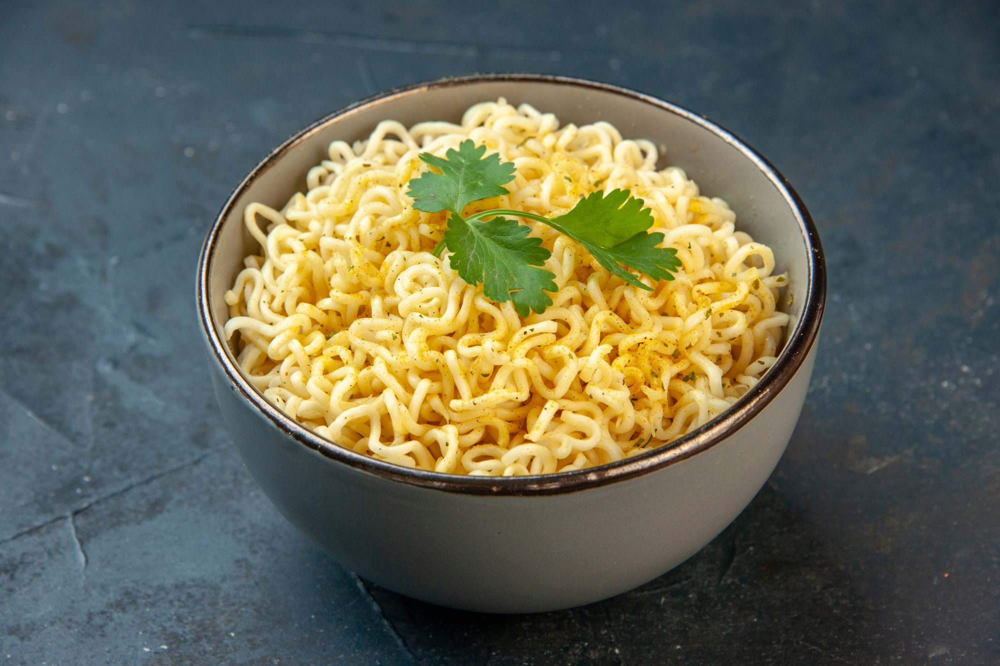

Maggi

Ingredients
- MAGGI 2-Minute Noodles (Masala)
- MAGGI Rich Tomato Ketchup
- Oil - 1 Tablespoon
- Cumin Seeds - 1 Teaspoon
- Tomato (Finely Sliced)
- Onion (Finely Chopped)
- Peas
- Salt
Steps
- Heat the oil and then roast the cumin seeds in it. Then, toss in the tomatoes, the onions and cook them well. Add the peas and the MAGGI Tomato ketchup, give it a stir, and let them cook for a while!
- Cook one pack of MAGGI Masala Noodles (just follow the instructions on the pack!) and transfer it onto a dish.
- Put the cumin-tomato-onion mix right on top of the MAGGI noodles and you are ready to serve the easy peasy fun!
Main Menu